주차한 차가,
잠깐 기도의 방이 됩니다.
집에 들어가기 전에도, 일하다 기도 시간이 됐을 때도, 주차한 차 안의 몇 분을 휴대폰 대신 기도와 고요한 머묾으로. 차가 먼저 묻고, 문을 닫고, 방해하지 않고, 끝날 때를 알아채 조용히 되돌려 놓습니다.
매일 기도하는 사람은 많지만,
문을 닫을 방이 없습니다.
집에는 가족이, 일터에는 동료가 있습니다. 그래서 이미 주차한 차에 몇 분 앉아 있지만, 밝은 실내등과 켜진 화면, 잠기지 않은 문 사이에서 차는 기도의 자리가 되지 못하고 손은 휴대폰으로 갑니다.
한국인 가운데 매일 기도하는 사람
Pew Research Center, 2025c차 안에서 쉬는 습관이 있는 영국 차량 보유자
Halfords, 2025화면에는 빛 한 줄과 한 문장만 있습니다.
닫힌 문 아래로 새는 빛 한 줄. 여섯 단계 내내 같은 자리에서 길이와 색과 밝기만 바뀝니다. 차 안 앰비언트 빛과 같은 색이라 화면은 실내 빛의 일부처럼 보입니다.
-
0 준비
잠시 머물다 갈까요
주차하면 차가 먼저 조용히 묻습니다. 보던 화면을 다 덮지 않도록 반쪽으로 뜨고, 거절해도 됩니다. 같은 곳에서 두 번 거절하면 다시 묻지 않습니다.
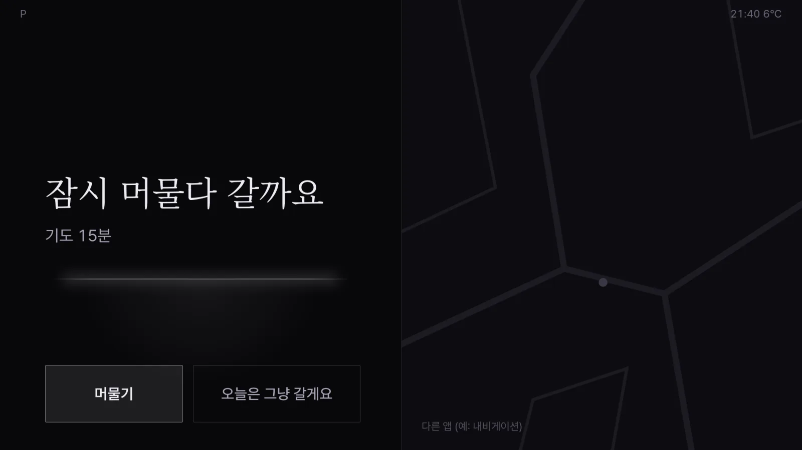
-
1 문턱
문을 닫고, 숨을 한 번 고를게요.
바꾸기 전에 원래 값을 저장합니다. 문을 잠그고 창을 닫고, 빛을 8초에 걸쳐 호박색으로 낮춥니다. 차가 하는 일은 화면 아래에 낱말로 적습니다.
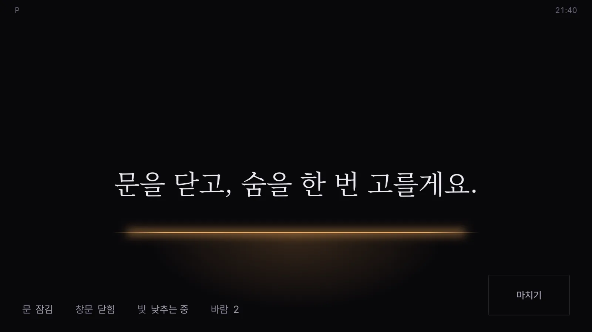
-
2 숨
들이쉬고, 내쉬고
원이 들숨 4초, 날숨 6초에 맞춰 커졌다 작아집니다. 숨을 재거나 채점하지 않습니다.
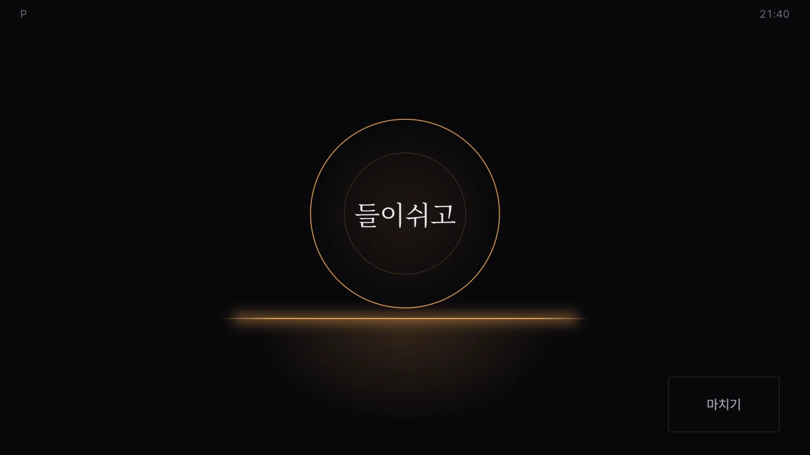
-
3 머묾
(차는 말하지 않습니다)
빛은 가장 짧고 가장 어둡고, 움직이지 않습니다. 아무도 재촉하지 않는 시간입니다.
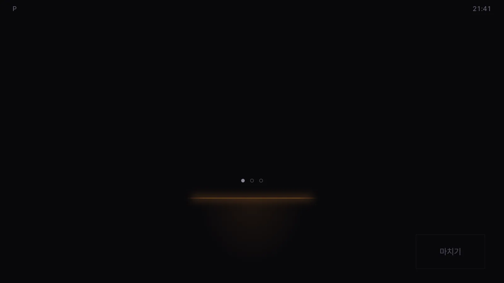
-
4 돌아옴
이제 천천히 돌아올게요.
마칠 때를 알아채면 빛을 25초에 걸쳐 따뜻한 흰빛으로 넓히고, 등받이를 운전 자세로 되돌립니다. 내릴 때보다 천천히 올라옵니다.
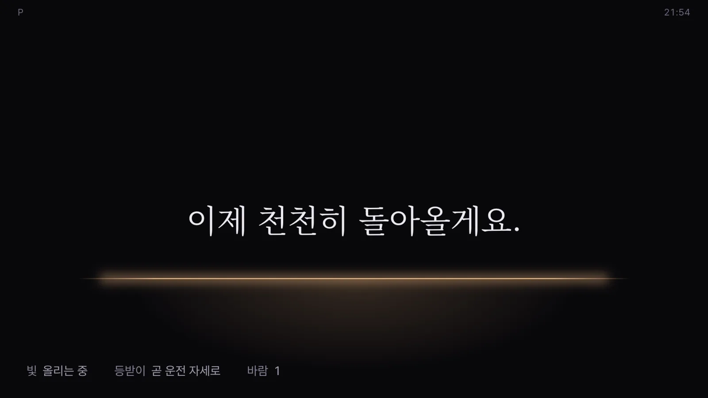
-
5 출발 준비
끝났어요.
좌석과 공조, 빛을 원래대로 돌린 값을 보여 줍니다. 빛 한 줄은 화면 끝에서 끝까지 이어집니다. 문이 열렸습니다.
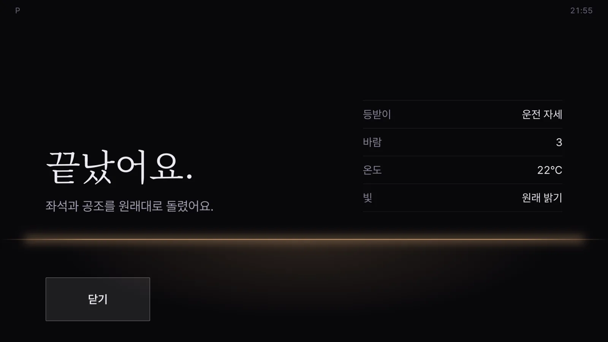
시안 그림에 남아 있는 [닫기]는 최종 설계에서 없앴습니다. 버튼 없이 끝납니다.

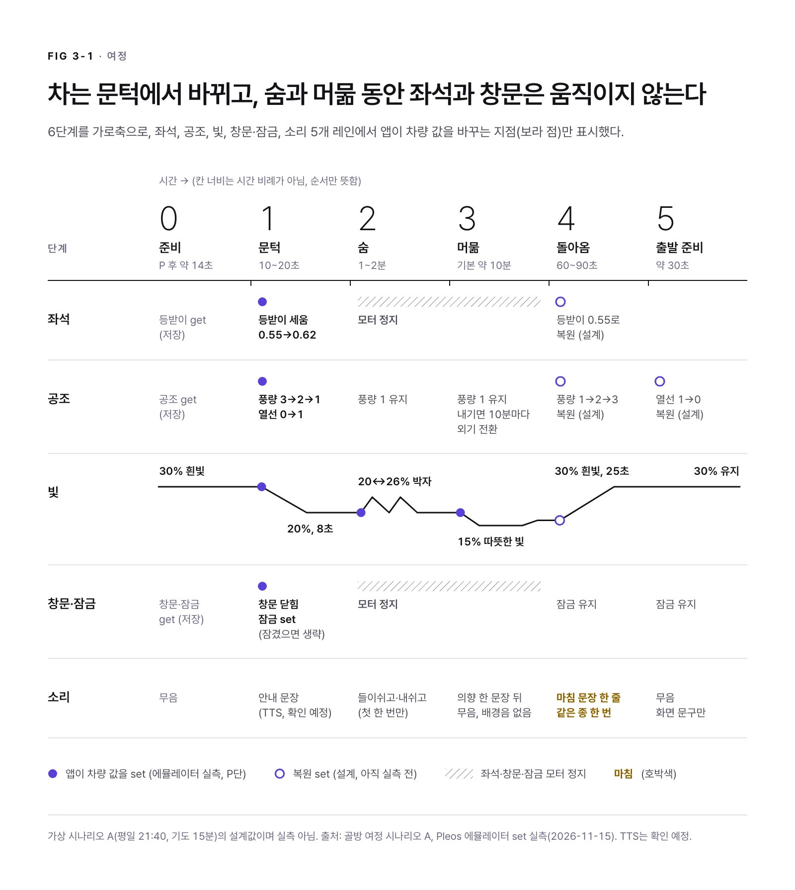
차가 대신 하는 일
사용자는 아무것도 설정하지 않습니다. 차가 방을 만들고, 끝나면 저장해 둔 값으로 돌려놓습니다. 읽지 못한 값은 바꾸지 않습니다.
문
잠그고, 끝나면 원래대로. 문이 열리면 페이드 없이 즉시 복원합니다.
창문
닫아서 바깥 소리와 시선을 막습니다.
좌석
등받이를 조금 뒤로 기대게 했다가 운전 자세로 되돌립니다.
공조
바람을 낮추고, 끝나면 원래 세기로 되돌립니다.
빛
앰비언트를 화면의 빛 한 줄과 같은 색, 같은 시계로 움직입니다.
Pleos 에뮬레이터에서 제어 호출 10개 중 9개가 반영됐습니다. 좌석과 잠금은 P단에서만 허용됩니다.
버튼 없이 끝납니다.
타이머는 기도 중인 사람을 자르고, "마치겠습니까?"는 눈을 뜨고 답하게 만듭니다. 룸19는 마칠 준비 확률 p를 매 초 다시 계산합니다. 이 사람의 지난 머묾 길이를 사전분포로, 화면 터치와 등받이 같은 차 안의 신호를 관측으로 삼는 베이지안 모델입니다. p가 0.5를 넘으면 빛을 아주 천천히 올리고, 0.7에서 소리를 줄이고, 0.85에서 한 문장을 한 번만 말합니다.

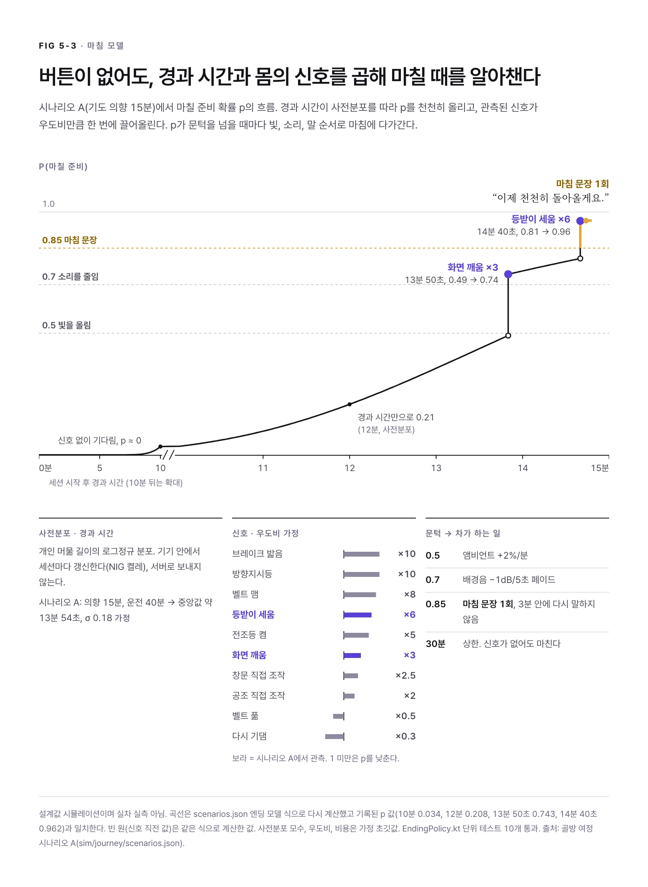
기도는 차 밖으로 나가지 않습니다.
기도 내용을 듣거나 녹음하거나 분석하지 않습니다.
계정도 동기화도 없습니다. 머묾 길이의 학습도 기기 안에서 끝납니다.
기도 기록을 남기지 않습니다. 학습에 쓰는 머묾 길이만 기기 안에 있습니다. 그래서 사용자당 변동비도 0에 가깝습니다.

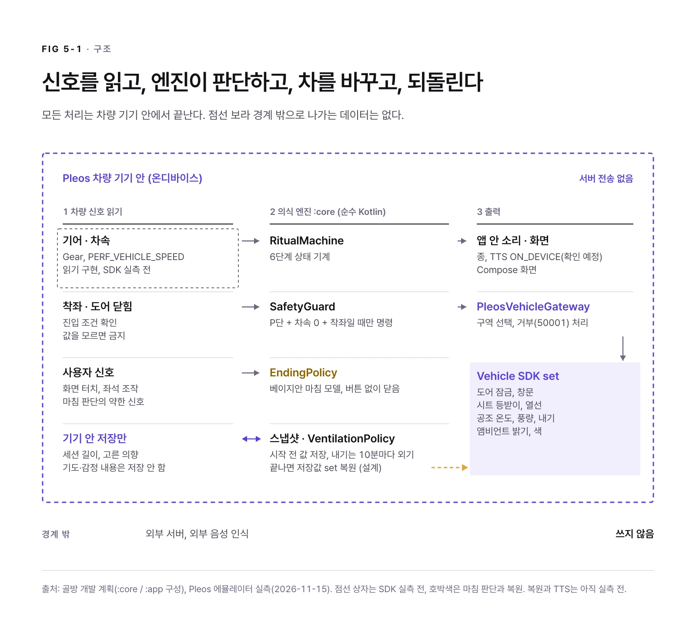
같은 코어, 두 가지 판
Pleos판
차가 문, 창문, 좌석, 공조, 빛을 직접 바꾸고 되돌립니다. 기본 탑재를 목표로 합니다.
휴대폰 간이판
Pleos가 없는 차를 위해. 차량 제어 없이 블루투스 끊김과 정지 감지로 문턱, 숨, 머묾, 마침을 합니다.
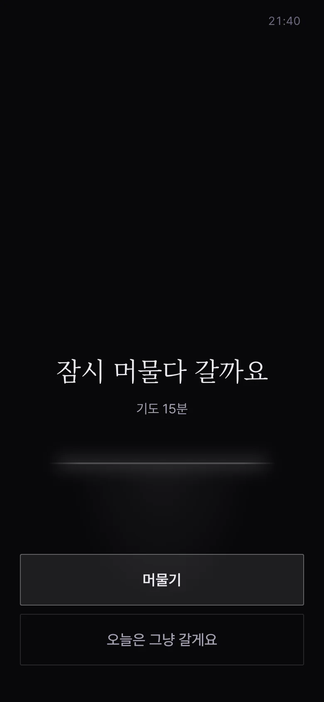
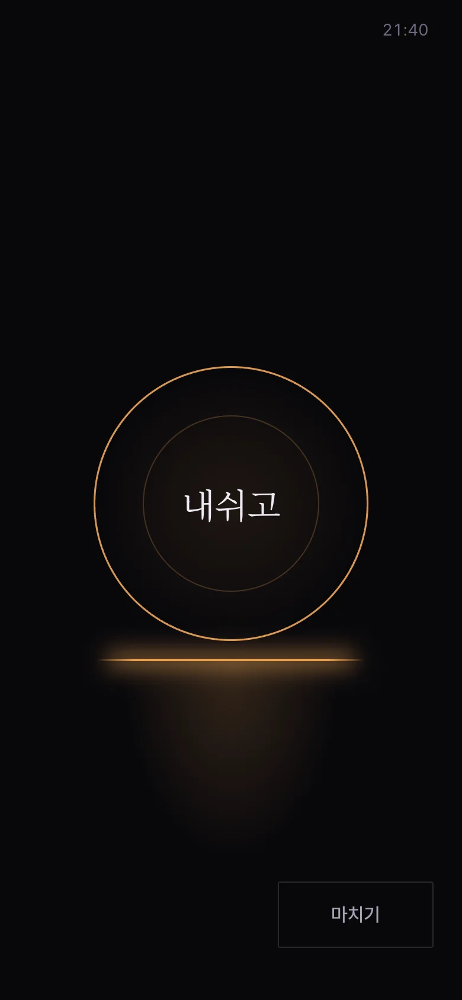
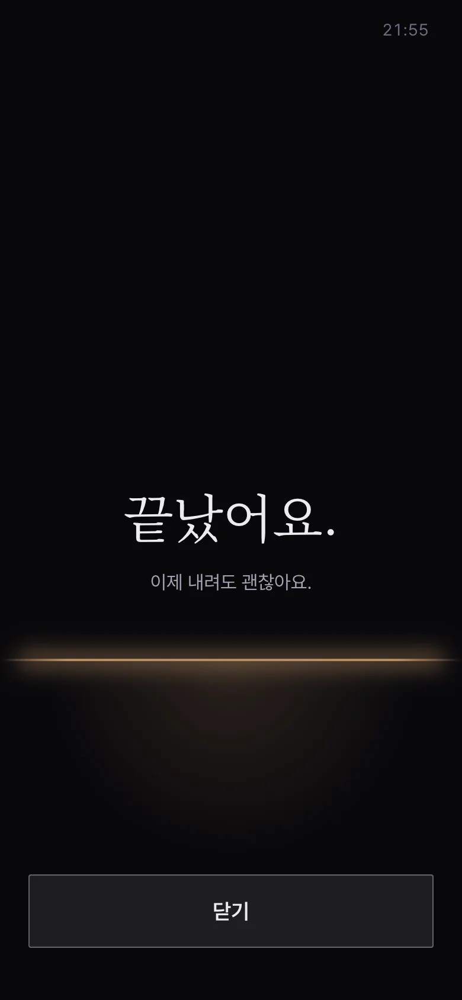
주차된 시간을 매일 쓰는 차 안 경험으로
1순위: 현대자동차 기본 탑재 라이선스
Vehicle SDK의 제어와 복원을 가장 잘 보여 주는 기본 앱. 주행이 아닌 주차 시간에 차량 제어를 매일 쓰게 만듭니다.
2순위: 고급 기능 구독
심화 의례 팩과 상황별 프리셋만. 기도 자체와 안전, 복원, 마침, 개인 학습은 무료이고 가입도 없습니다.
MAU = 국내 Pleos 탑재 차량 × 설치율 × 월 활성 비율
30만 대 × 5% × 60% ≈ 9,000명가정
2027년 말 기준. 보수 3,000명, 낙관 25,200명. 세 값 모두 팀 가정이며 식을 그대로 공개합니다.

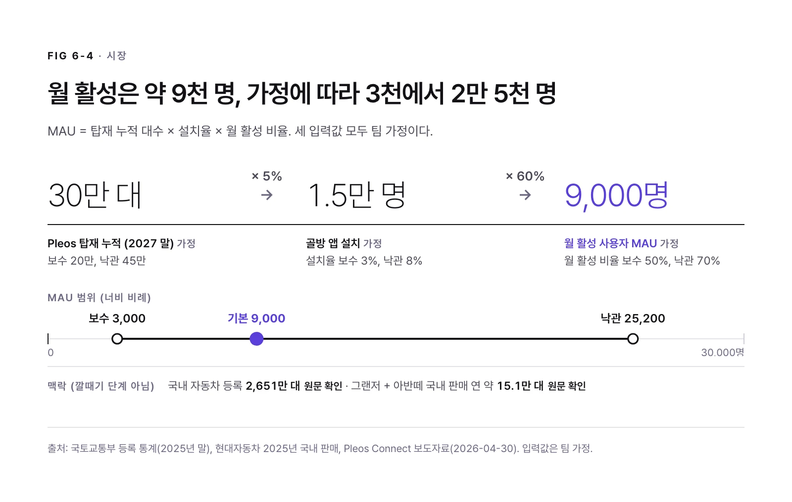

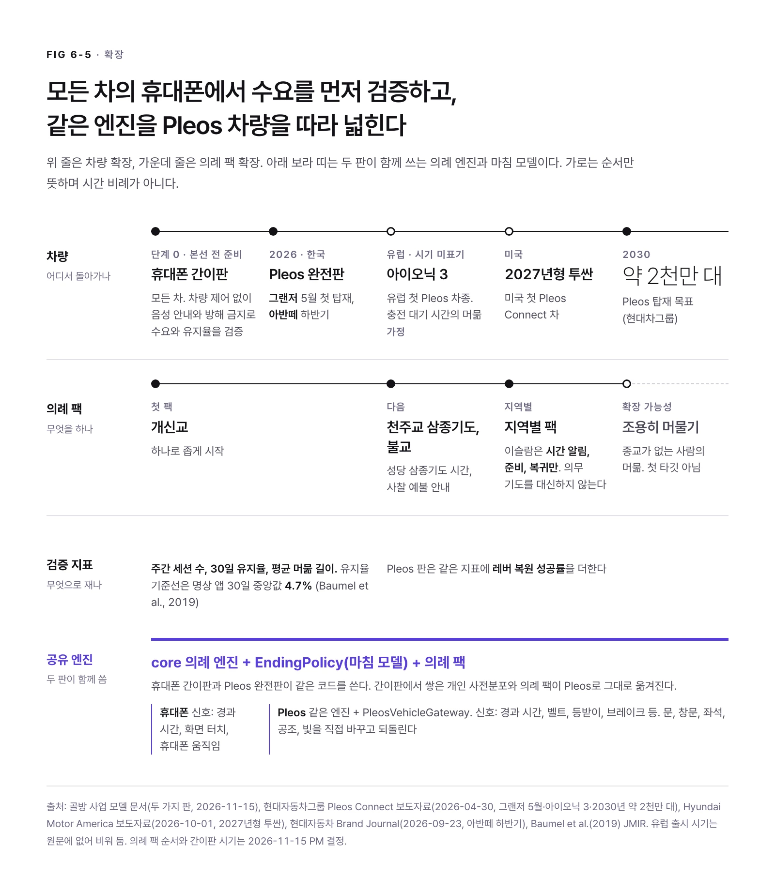